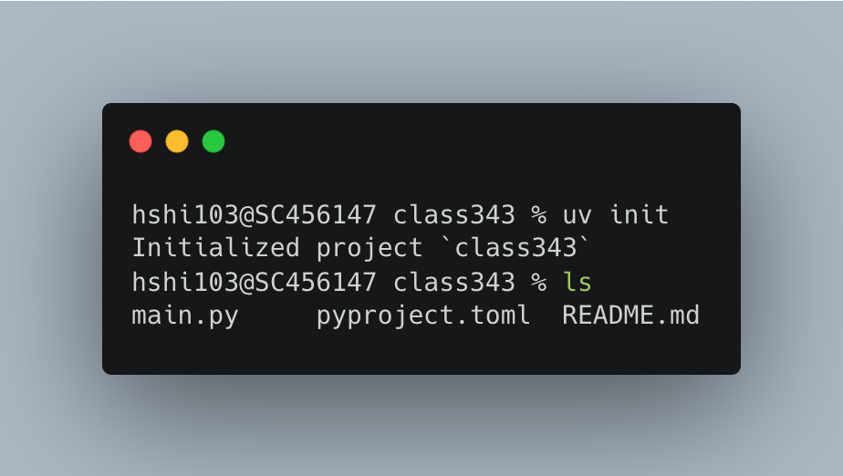
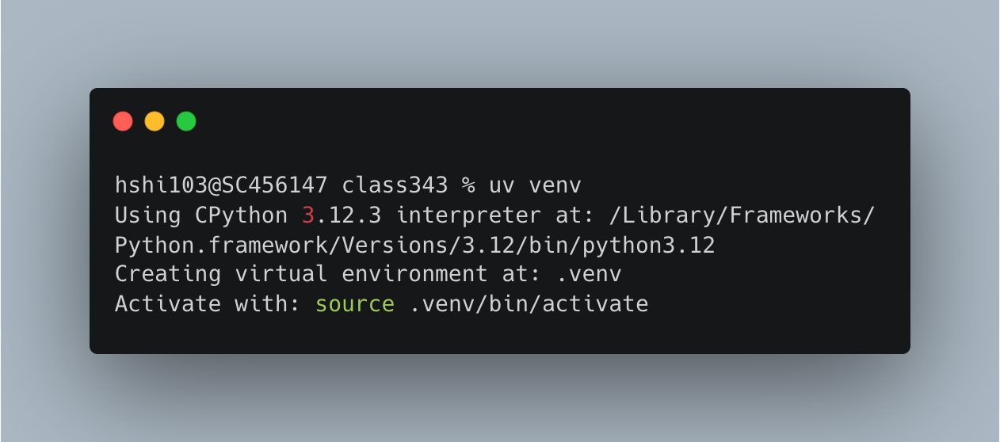
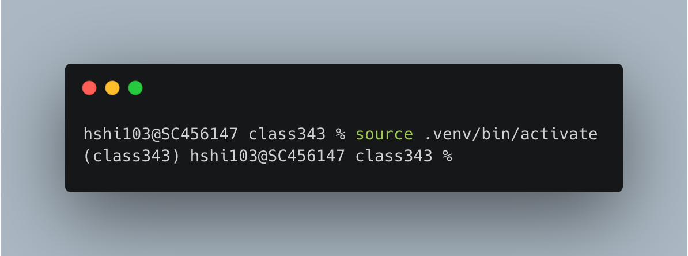
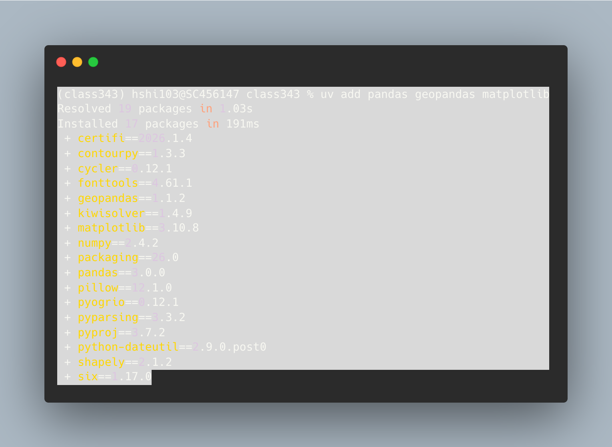
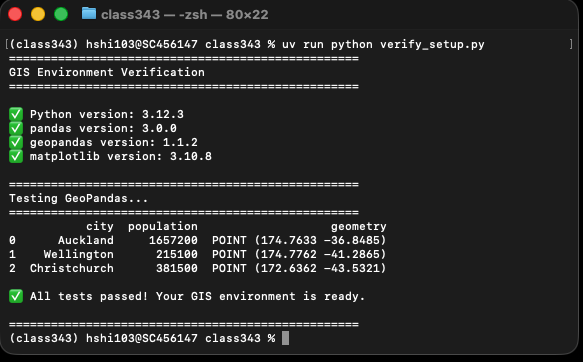

1.2 UV environments
Story problem
You’ve built a Python script that analyses bus routes in Auckland. Your supervisor wants to run it, but:
- They use Windows, you use macOS
- They have different versions of packages installed globally
- When they run your code, it crashes with import errors
Solution: Virtual environments ensure your project works anywhere, anytime.
What you will learn
- Understand why virtual environments matter
- Create and manage environments with
uv - Add packages and lock versions for reproducibility
- Run scripts consistently with
uv run - Share projects that “just work”
Understanding virtual environments
The problem: Global installations
Imagine this scenario:
Your computer (global Python):
├── pandas 2.0.0
├── geopandas 0.14.0
└── numpy 1.24.0
Project A needs: Project B needs:
├── pandas 2.0.0 ├── pandas 1.5.0 ❌ Conflict!
├── geopandas 0.14.0 ├── geopandas 0.12.0
└── numpy 1.24.0 └── numpy 1.23.0Problem: You can’t have two versions of pandas installed globally!
The solution: Virtual environments
Each project gets its own isolated environment:
Your computer:
├── Project A/
│ └── .venv/ ← Isolated environment
│ ├── pandas 2.0.0
│ ├── geopandas 0.14.0
│ └── numpy 1.24.0
└── Project B/
└── .venv/ ← Separate isolated environment
├── pandas 1.5.0
├── geopandas 0.12.0
└── numpy 1.23.0Benefits: - No conflicts between projects - Each project has exactly what it needs - Easy to share and reproduce
Key uv commands
| Command | Purpose |
|---|---|
uv init |
Create a new project |
uv venv |
Create virtual environment |
uv add <package> |
Install a package |
uv remove <package> |
Uninstall a package |
uv sync |
Install all locked dependencies |
uv run <command> |
Run command in environment |
uv pip list |
List installed packages |
uv lock |
Update lock file |
Creating your first project
Step 1: Create project directory
macOS
cd ~/Documents
mkdir class343
cd class343Windows
cd ~\Documents
mkdir class343
cd class343:::
Step 2: Initialise with uv
uv initThis creates: - pyproject.toml - project configuration file - main.py - sample Python script - README.md - Documentation - .python-version - specifies Python version

Step 3: Examine pyproject.toml
Open pyproject.toml in your editor:
[project]
name = "class343"
version = "0.1.0"
description = "Add your description here"
readme = "README.md"
requires-python = ">=3.12"
dependencies = []This file tracks: - Project metadata - Python version requirement - Dependencies (currently empty)
Step 4: Create virtual environment
uv venvOutput:
Using Python 3.12.x
Creating virtual environment at: .venv
Activate with: source .venv/bin/activate (Linux/macOS) or .venv\Scripts\activate (Windows)
The .venv folder contains:
.venv/
├── bin/ (macOS) or Scripts/ (Windows) ← Python executables
├── lib/ ← Installed packages
└── pyvenv.cfg ← ConfigurationThe .venv folder can be large (100MB+). You’ll add it to .gitignore later so it’s not tracked in Git.
We will do this later when we learn git!

To see the list structure of the code, hit:
find . -maxdepth 2 -printAdding packages
Install your first package
Let’s install pandas:
uv add pandasWatch what happens:
uvdownloads pandas and its dependencies- Updates
pyproject.toml - Creates/updates
uv.lock
Now check pyproject.toml:
[project]
name = "auckland-greenspaces"
version = "0.1.0"
description = "Add your description here"
readme = "README.md"
requires-python = ">=3.12"
dependencies = [
"pandas>=2.2.3", # ← Added automatically!
]Install multiple packages
Install all GIS packages you need:
uv add geopandas matplotlibWatch as uv quickly installs each package and its dependencies!

Each uv add command: - Installs the package - Resolves dependencies - Updates pyproject.toml - Updates uv.lock
Understanding uv.lock
Open uv.lock - it’s long! It contains:
[[package]]
name = "pandas"
version = "2.2.3"
source = { registry = "https://pypi.org/simple" }
dependencies = [
{ name = "numpy" },
{ name = "python-dateutil" },
{ name = "pytz" },
]
...Purpose: This file locks exact versions of every package and dependency.
Result: Anyone who runs uv sync gets identical package versions.
Always commit uv.lock to Git! This ensures reproducibility.
Running code in your environment
Quick test
Run this one-liner to check if GeoPandas imports correctly:
uv run python -c "import geopandas as gpd; print('✅ GeoPandas', gpd.__version__)"Expected output:
✅ GeoPandas 1.1.xComprehensive test
Create a test script called verify_setup.py:
"""
Verification script for GIS environment setup
University of Auckland - GISCI 343
"""
import sys
import pandas as pd
import geopandas as gpd
import matplotlib.pyplot as plt
from shapely.geometry import Point
print("=" * 50)
print("GIS Environment Verification")
print("=" * 50)
# Check Python version
print(f"\n✅ Python version: {sys.version.split()[0]}")
# Check package versions
print(f"✅ pandas version: {pd.__version__}")
print(f"✅ geopandas version: {gpd.__version__}")
print(f"✅ matplotlib version: {plt.matplotlib.__version__}")
# Test GeoPandas functionality
print("\n" + "=" * 50)
print("Testing GeoPandas...")
print("=" * 50)
# Create a sample GeoDataFrame with Auckland and Wellington
cities = gpd.GeoDataFrame({
'city': ['Auckland', 'Wellington', 'Christchurch'],
'population': [1657200, 215100, 381500],
'geometry': [
Point(174.7633, -36.8485), # Auckland
Point(174.7762, -41.2865), # Wellington
Point(172.6362, -43.5321) # Christchurch
]
}, crs='EPSG:4326')
print(cities)
print("\n✅ All tests passed! Your GIS environment is ready.")
print("\n" + "=" * 50)Run the verification script:
uv run python verify_setup.py
Expected output should show: - Python 3.12.x - Package versions - A table with three New Zealand cities - “All tests passed!” message
Recommendation: Use uv run instead of manual activation. It’s simpler and less error-prone.
Managing dependencies
View installed packages
uv pip listOutput:
Package Version
------------ -------
pandas 2.2.3
numpy 1.26.4
geopandas 1.1.2
...Remove a package
uv remove foliumThis: - Uninstalls folium - Removes it from pyproject.toml - Updates uv.lock
Upgrade packages
To upgrade all packages to latest compatible versions:
uv lock --upgrade
uv syncBe cautious with upgrades! Test your code after upgrading packages.
Quick reference
# Create project
uv init
uv venv
# Add packages
uv add pandas geopandas matplotlib
# Run code
uv run python script.py
# Recreate environment (new machine)
uv venv
uv sync
# View packages
uv pip list
# Update packages
uv lock --upgrade
uv sync
# Remove package
uv remove package-name